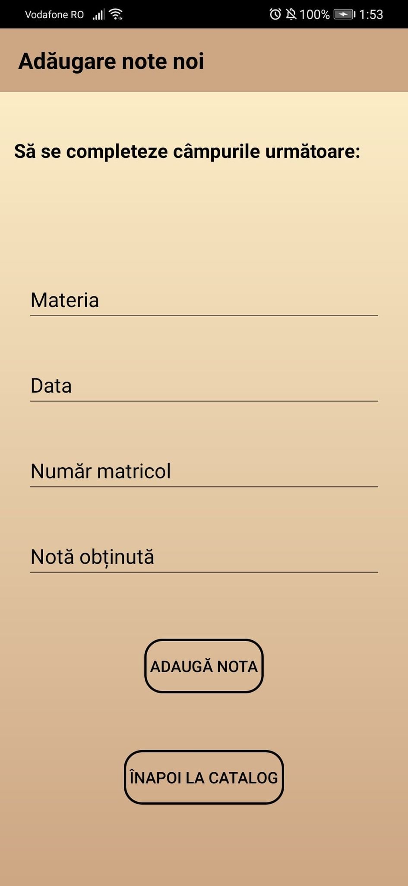

Créer un compte
Après avoir effectué le processus de Connexion , l'utilisateur sera redirigé vers la page CATALOGUE. Ici, il aura accès aux informations / fonctionnalités suivantes, selon le type de profil:
Profil Élève et Parent
Une fois la page CATALOGUE accédée, les utilisateurs avec des profils de types Etudiant et Parent pourront afficher les informations suivantes: Sujet pour lesquels des notes ont été ajoutées, Date d'ajout , Numéro d'inscription de l'élève et la Note elle-même.

Pour vous déconnecter de la page Catalogue, cliquez sur le bouton "Se Déconnecter".
Profil Professeur
Une fois accédés à la page CATALOGUE, les utilisateurs avec des profils de type Enseignant pourront afficher les informations suivantes: Sujet pour lequel les notes ont été ajoutées, Date d'ajout , Numéro d'inscription de l'étudiant et Note approprié pour chaque élève.

Pour ajouter un nouvel enregistrement, appuyez sur le bouton "+" dans le coin supérieur droit.

Ensuite, les champs "Sujet" , "Date" , "Numéro d'enregistrement" et "Note obtenue" .

Après avoir rempli les champs, appuyez sur le bouton "Ajouter une note" . Pour voir l'effet de l'ajout, appuyez sur le bouton "Retour au catalogue" .